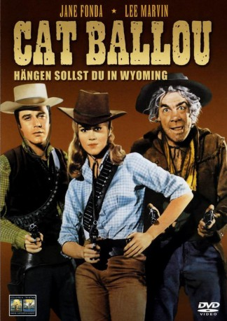

#11691 Cat Ballou
Auszeichnungen: 1 Oscars gewonnen für 4 Oscars nominiert 1 GoldenGlobes gewonnen 1 BAFTA-Awards gewonnen
 
 IMDB-Wertung: 6.9 / 10
IMDB-Wertung: 6.9 / 10  Tomatometer: 100
Tomatometer: 100  Metascore: 60
Metascore: 60 
Cat Ballou heuert Kid Shelleena um ihren Vater vor einem Ganoven zu schützen. Doch der Plan geht nicht auf, denn Shelleen ist zu betrunken, um Cats Vater zu schützen. Nach dem Tod des Alten startet Cat einen wilden Rachefeldzug. Lee Marvin erhielt für seine Leistung den Oscar für die beste Nebenrolle.
Jahr: 1965
Dauer: 92 Minuten
FSK: 12
Land: USA Studio: Columbia PicturesTonspuren:
Untertitel:
Auflösung: SD (640x352) Größe: 1198 MB
Genre: Komödie, Western, Liebe
Regisseur: Elliot Silverstein
Drehbuch: Walter Newman, Frank Pierson, Roy Chanslor
Soundtrack: Frank De Vol
Darsteller:
 Lee Marvin als Shelleen / Strawn
Lee Marvin als Shelleen / Strawn Jane Fonda als Cat Ballou
Jane Fonda als Cat Ballou Michael Callan als Clay Boone
Michael Callan als Clay Boone- Dwayne Hickman als Jed
- Nat 'King' Cole als Shouter / Sunrise Kid
- Stubby Kaye als Shouter / Sam the Shade
- John Marley als Frankie Ballou
- Reginald Denny als Sir Harry Percival
 Jay C. Flippen als Sheriff Cardigan
Jay C. Flippen als Sheriff Cardigan Arthur Hunnicutt als Butch Cassidy
Arthur Hunnicutt als Butch Cassidy Bruce Cabot als Sheriff Maledon
Bruce Cabot als Sheriff Maledon Burt Mustin als Accuser
Burt Mustin als Accuser Gail Bonney als Mabel Bentley (uncredited)
Gail Bonney als Mabel Bentley (uncredited) Noble 'Kid' Chissell als Deputy at Hanging (uncredited)
Noble 'Kid' Chissell als Deputy at Hanging (uncredited) Roydon Clark als Brawler (uncredited)
Roydon Clark als Brawler (uncredited) Nick Cravat als Minor Role (uncredited)
Nick Cravat als Minor Role (uncredited) George DeNormand als Townsman (uncredited)
George DeNormand als Townsman (uncredited) James Gonzalez als Townsman (uncredited)
James Gonzalez als Townsman (uncredited) Herman Hack als Townsman (uncredited)
Herman Hack als Townsman (uncredited)- Joseph Hamilton als Frenchie (uncredited)
- Elizabeth Harrower als Minor Role (uncredited)
 Harry Harvey als Train Conductor (uncredited)
Harry Harvey als Train Conductor (uncredited) Chester Hayes als Townsman (uncredited)
Chester Hayes als Townsman (uncredited)- Duke Hobbie als Homer (uncredited)
 Charles Horvath als Hardcase (uncredited)
Charles Horvath als Hardcase (uncredited) John Hudkins als Brawler (uncredited)
John Hudkins als Brawler (uncredited) Michael Jeffers als Townsman (uncredited)
Michael Jeffers als Townsman (uncredited) Robert Phillips als Klem (uncredited)
Robert Phillips als Klem (uncredited) Joe Ploski als Townsman (uncredited)
Joe Ploski als Townsman (uncredited) Fred Rapport als Townsman (uncredited)
Fred Rapport als Townsman (uncredited) Leoda Richards als Townswoman (uncredited)
Leoda Richards als Townswoman (uncredited) Chuck Roberson als Armed Guard (uncredited)
Chuck Roberson als Armed Guard (uncredited) John Roy als Train Passenger (uncredited)
John Roy als Train Passenger (uncredited)- Sailor Vincent als Townsman with Hairpiece (uncredited)
 Ted White als Gunslinger (uncredited)
Ted White als Gunslinger (uncredited)- Tom Nardini als Jackson Two-Bears
- Paul Gilbert als Train Messenger
- Oscar Blank als Townsman (uncredited)
- Herman Boden als Townsman (uncredited)
- Jimmie Booth als Townsman (uncredited)
- Patrick Campbell als Undertaker (uncredited)
- Dorothy Claire als Singing Tart (uncredited)
- Robert Cole als Townsman (uncredited)
- George Ford als Brothel Customer (uncredited)
- John Francis als Brothel Customer (uncredited)
- Maxine Gates als Big Woman (uncredited)
- Ayllene Gibbons als Hedda (uncredited)
- Jack Gordon als Townsman (uncredited)
- Hallene Hill als Honey Girl (uncredited)
- Lew Jenkins als Crewcut Man Throwing Punch at Dance (uncredited)
Datei: X:\NEU\Cat Ballou (1965, FSK12, 640x352).avi seit 20.08.2019
 Es gibt insgesamt 187 Filme in der Gruppe 'NEU'
Es gibt insgesamt 187 Filme in der Gruppe 'NEU'